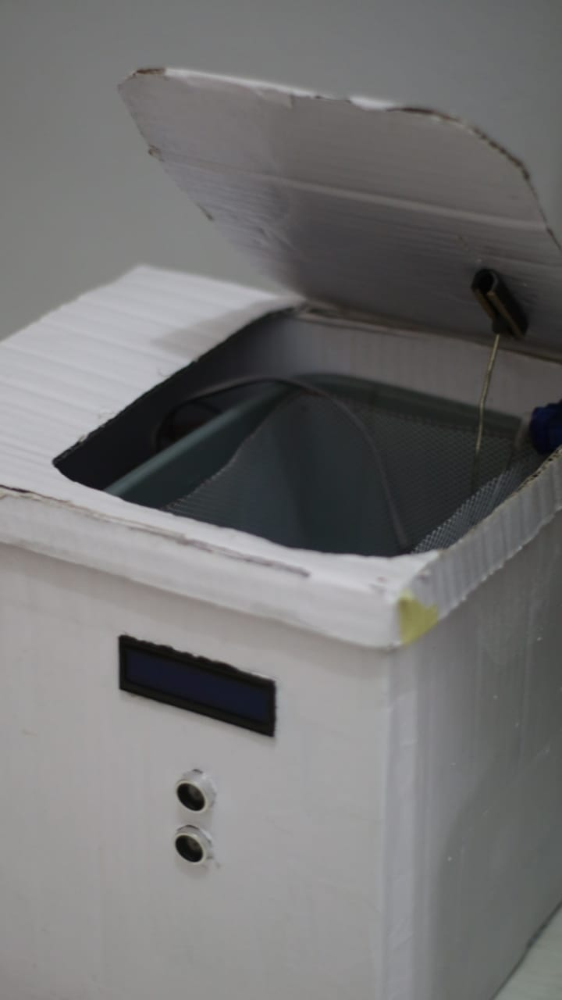
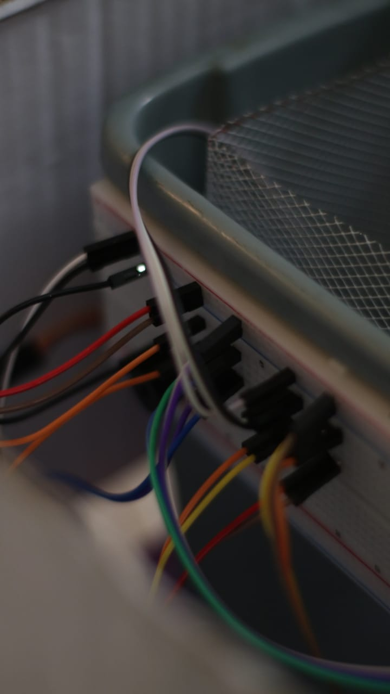
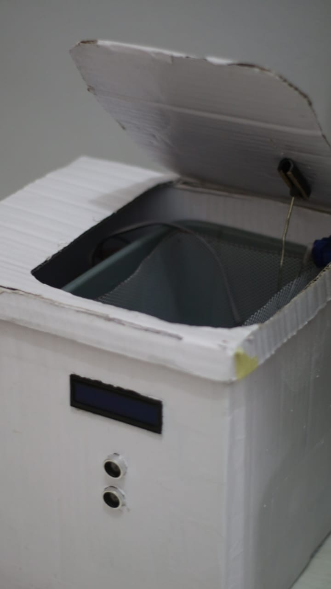
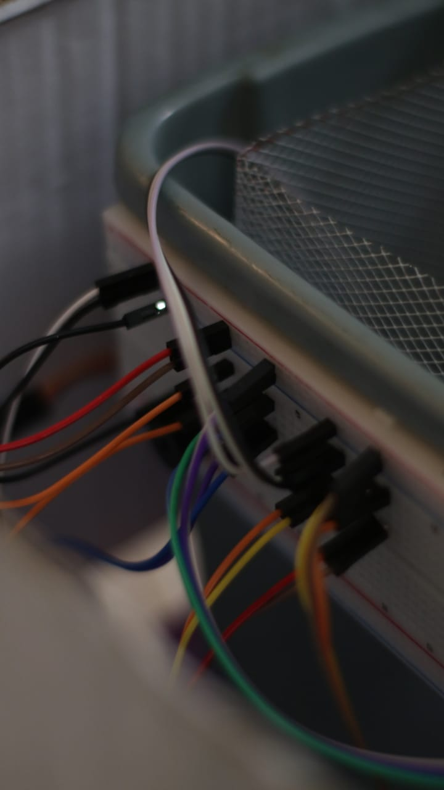

| Tentang |
|---|
| Smart Garbage adalah sebuah alat Internet of Things yang pada awalnya dibuat dengan sengaja untuk memenuhi tugas rekruitasi Laboratorium Cyber Physical System. Alat ini dapat meminimalkan kontak fisik secara langsung antara manusia dengan benda kotor. Fitur utama yang terdapat pada alat ini adalah sensor kelembapan DHT11 yang dapat mendeteksi suhu & kelembapan didalam tempat sampah dan sensor ultrasonic HC-SR04 yang dapat menetapkan objek agar penutup tempat sampah dapat bekerja secara otomatis. |
| Dokumentasi |


 



|
| Cara Kerja Alat |
| click here |
| Perancang |
| Fauji Feriyaman, Fieril Nur Arham, Ikrar Khaera Arfat, Lintang Hannan Maulana |